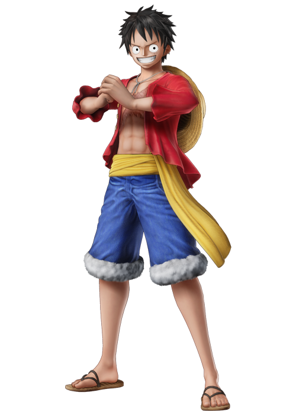

Entre le code transmis par Akim pour rejoindre le parcours.
Chaque mission suit le même rituel : comprendre → vérifier → reconstruire la méthode → la rappeler → appliquer → reconstruire encore → transférer → valider.

La V1 sait construire une URL Google Forms préremplie. Il suffit de renseigner une fois l’URL du formulaire et les identifiants entry.xxxxx des champs.
Le bouton « Suivi parent » ouvre le tableau de pilotage dans Google Sheets.